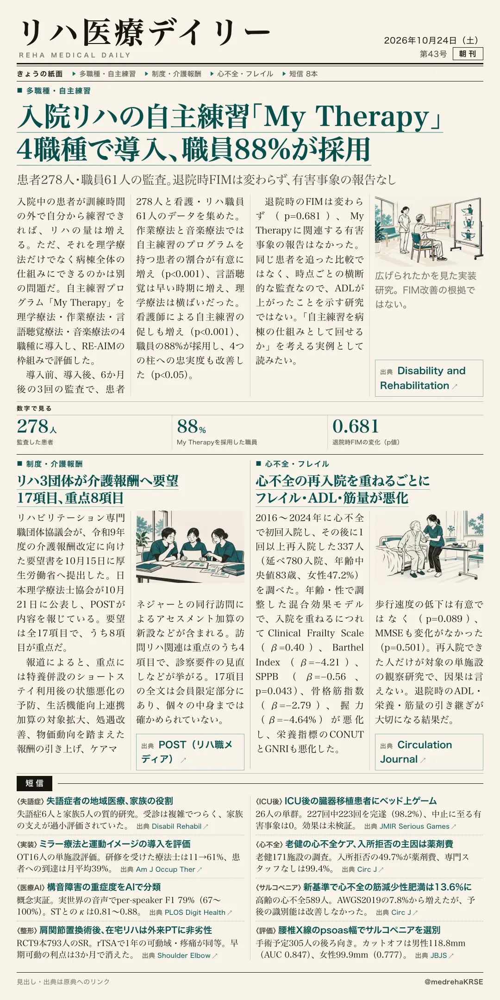
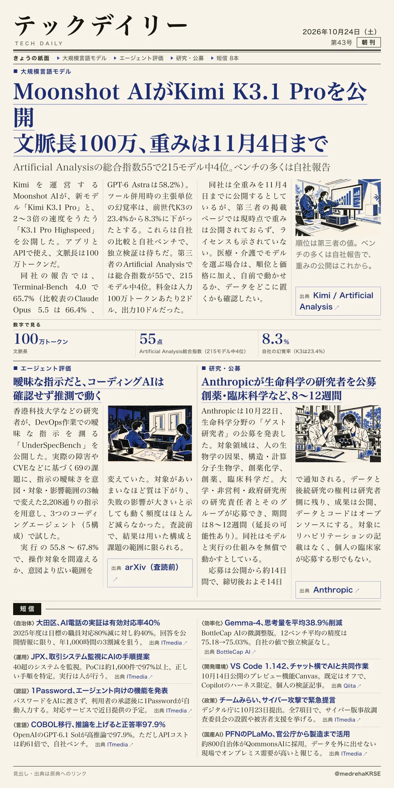

リハ医療デイリー
入院リハの自主練習「My Therapy」 4職種で導入、職員88%が採用
患者278人・職員61人の監査。退院時FIMは変わらず、有害事象の報告なし
訓練の時間外に患者が自分で練習する取り組みを、病棟全体で広げられるか。RE-AIMで評価した実装研究。

テックデイリー
Moonshot AIがKimi K3.1 Proを公開 文脈長100万、重みは11月4日まで
Artificial Analysisの総合指数55で215モデル中4位。ベンチの多くは自社報告
Kimiの新モデルが出た。第三者の指数では上位だが、重みの公開はこれからだ。
